DSRL π₀ / LIBERO：
已完成实验、证据边界与下一步方案
单任务噪声策略已稳定提升成功率；双目标与组合任务诊断说明，下一步应先验证目标接口与技能，再决定是否投入多任务 RL 或阶段恢复。
一个任务；每份控制器100回合
40个reset成簇，不能当作240独立初态
完整goal与第一阶段均未完成
1. 实验范围与证据等级
本项目当前在仿真中研究：冻结VLA时，语言干预和潜噪声RL分别能改变什么，能否改善受扰后的执行与恢复。已完成结果集中于LIBERO；ALOHA Sim未纳入以下数据。语言、精度、恢复之间的分工仍是待检验问题，不能从设计意图直接当作结论。
| 实验 | 主要问题与规模 | 实际状态 | 可比范围 |
|---|---|---|---|
| 单任务基线 | Base 100；DSRL三个训练seed，各100独立终评 | 已完成三个500k-update控制器 | 原JAX π₀，同一任务；Base只有一组终评 |
| 正常状态探针 | 60个短分支，40步文本/噪声响应 | 已完成接口检查 | 不作完整任务成功率比较 |
| C0/C1开发 | 10 reset × 3状态 × 4文本 × 3噪声＝360 | 已完成探索性开发 | 原A目标不变；同状态配对 |
| C1独立确认 | 10新reset × 3状态 × 2文本 × 5策略＝300 | 数据有效父job后续C2失败 | 以10个reset为cluster；三份固定控制器 |
| C2 v6 | 5参考中4触发；4 × 2状态 × 4文本 × 3噪声＝96 | 已完成小规模开发试点 | 已触发参考的条件恢复；未触发另报 |
| E1/E2 first_batch | 100开发＋30辅助＋60阶段开发＋800双目标确认＝990 | 已完成990条轨迹闭环核验 | 冻结原VLA及三个旧SAC；无新梯度更新 |
| native迁移诊断 | 120静态输入组＋20完整开发回合 | 未通过数值/行为等价门禁 | 保留失败证据；不跨框架作单变量归因 |
| SFT-A | 真实A/B各50轨迹；pilot500，条件上限3000 | 运行中最新本地记录270更新 | 只比较同一native底座未适配/适配两臂；效果待终评 |
下文区分三类证据：工程验证证明模型能调用、参数能更新、状态能恢复；开发结果用于诊断和提出假设；锁定后的确认才用于检验选定干预是否在新reset上维持。代码执行成功、GPU分配成功、短测成功都不等同于算法效果复现。
2. 任务、组件与共同配置
2.1 基线究竟完成什么任务
LIBERO-90任务ID 57：LIVING_ROOM_SCENE3_pick_up_the_cream_cheese_and_put_it_in_the_tray。机器人需要抓取奶油奶酪，并将其放进木托盘。原目标谓词为 In(cream_cheese_1, wooden_tray_1_contain_region)，不能以夹到物体或抬起来替代完成。
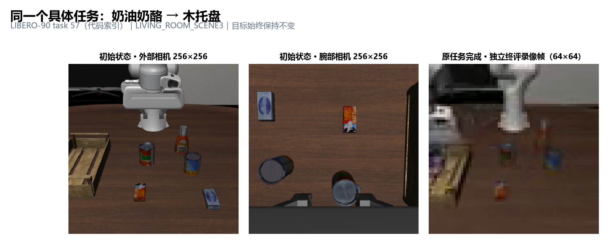
2.2 哪个组件是DSRL的主要算法
DSRL学习的是扩散/流动作生成的初始潜噪声策略。本实现的PixelSAC从64×64图像及8维本体状态生成32维有界向量，将其沿50个时间位置重复后送入冻结π₀。π₀同时读取两路224×224图像、本体和文本，预测50×7动作；每次执行前20步后重新观测。
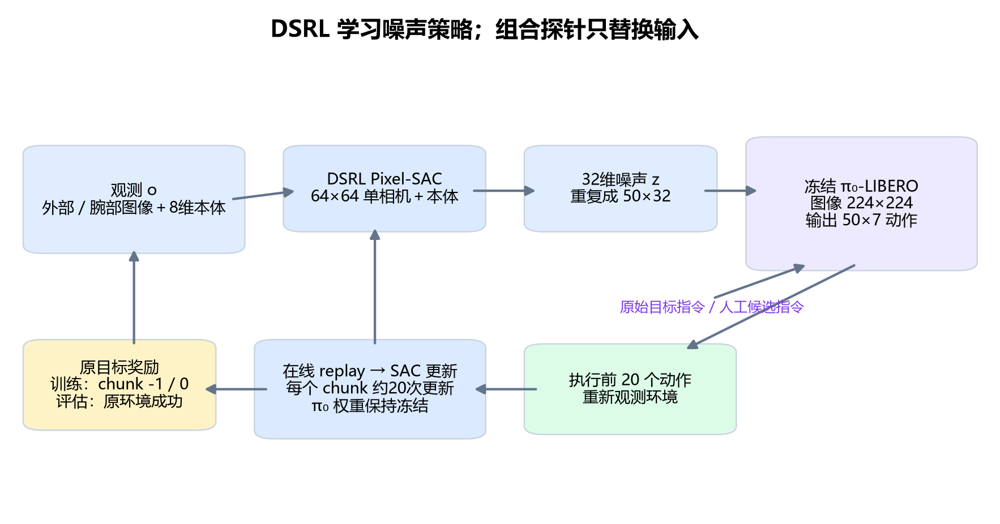
| 组件/入口 | 作用 | 与研究结论有关的边界 |
|---|---|---|
examples/train_sim.py | 构造仿真、π₀、SAC与buffer；执行交互、更新、周期评估和保存 | 500k max_steps是梯度更新计数，真实环境步另计 |
jaxrl2/agents/pixel_sac/ | 主要Noise RL算法：像素编码器、actor、critic集成、熵正则 | 原actor没有语言输入；单目标奖励可能塑造对象偏好 |
openpi/ | 冻结π₀模型、采样与观测/动作变换 | 沿用作者修改的锁定子模块，未换成π₀.₅ |
LIBERO/ | MuJoCo场景、任务BDDL、观测和成功谓词 | MuJoCo真值用于扰动/计分/审计，不给普通学习控制器 |
tools/control_probe.py、outcome/research工具 | 共同状态、固定文本×噪声枚举、事件审计与配对统计 | 人工指令干预，尚无Instruction RL或Joint RL训练结果 |
tools/sft_*.py | 新批次的数据审计、转换、native LoRA、恢复及自动终评 | 新的同native底座内部实验，与原JAX结果分开解释 |
原模型来源为 s3://openpi-assets/checkpoints/pi0_libero，远端保存于 checkpoints/pi0_libero；三份已训练SAC来自job18046/18103/18123的500000-update checkpoint。它们是本项目产物。本文没有将官方π₀权重称为已训练好的DSRL权重。
共同仿真控制频率20Hz。历史原始任务horizon400步，成功即结束；新E1固定运行400步并继续记录两个目标，E2为600步且官方完整goal优先结束。三种终止协议不合并计算成功率。
3. 单任务DSRL基线：完成了稳定的局部复现
已验证最初短测18044确认模型加载、真实梯度更新、参数变化、冻结VLA和checkpoint恢复；随后三次独立Noise RL训练及各100回合独立终评均完成。下表是终评，未用训练过程中最好的10回合数字替代。
| 方法 | 训练seed | 独立终评job | 成功/回合 | 平均完成/超时步数 |
|---|---|---|---|---|
| Base | 0 | 18045 | 35/100 | 未在汇总中提供 |
| DSRL | 0 | 18102 | 99/100 | 155.8 |
| DSRL | 1 | 18122 | 100/100 | 144.59 |
| DSRL | 2 | 18125 | 98/100 | 179.72 |
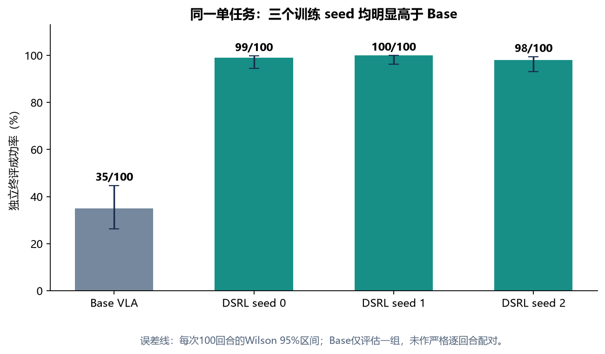
3.1 训练过程与实际预算
SAC先收集超过500个chunk，再以每次交互最多20次梯度更新推进；batch256，actor LR1e-4，critic/温度LR3e-4，10个Q网络，隐藏层128×3，target τ＝0.005，底层discount0.999，chunk折扣按20步折算。每10k更新做10回合训练内评估，每50k保存。三次训练耗时约8小时29分、8小时20分、8小时13分。
| seed | 训练job | 终评job | 梯度更新 | 训练物理步 | 训练chunk | 训练内评估步 |
|---|---|---|---|---|---|---|
| 0 | 18046 | 18102 | 500,000 | 496,291 | 25,504 | 98,535 |
| 1 | 18103 | 18122 | 500,000 | 493,605 | 25,501 | 92,443 |
| 2 | 18123 | 18125 | 500,000 | 496,428 | 25,496 | 102,276 |
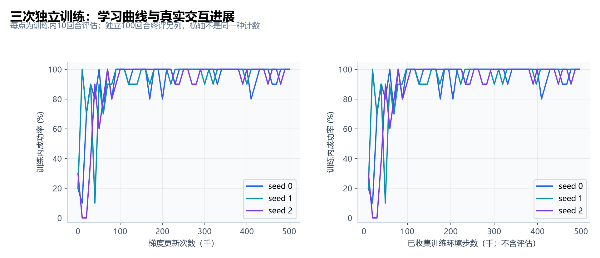
边界：尚未证明整个LIBERO、多任务、OOD或通用语言跟随能力；Base只评估了一组100回合。原始Base高斯与重复的有界噪声参数化不同，后续有界随机对照用于进一步区分。
4. 指令如何重构：明确文本与时间日程
早期“组合实验”没有在线LLM，也没有学到指令选择策略。使用人工有限候选，原任务奖励始终是奶油奶酪入托盘。
| ID | 实际英文指令 | 用途 |
|---|---|---|
| original | pick up the cream cheese and put it in the tray | 原完整目标 |
| paraphrase | place the cream cheese in the tray | 同义表达 |
| pick | pick up the cream cheese | 只强调当前抓取子动作 |
| above_tray | move the cream cheese above the tray | 短接口探针；不进入全部完整组合 |
| regrasp | grasp the cream cheese again and place it in the tray | 显式要求重抓；开发后锁定进入确认 |
| conflicting | put the cream cheese on the table | 冲突诊断；不当作原目标的合理替代 |
C1/C2日程：共同状态开始后的query0和query20使用候选指令，40步起一律切回original；每20步重新查询。此时比较的是“局部指令干预×冻结噪声策略”。后来的E1不同：A/B指令全400步保持，不再切回A，避免把B失败误解释成文本只干预40步。
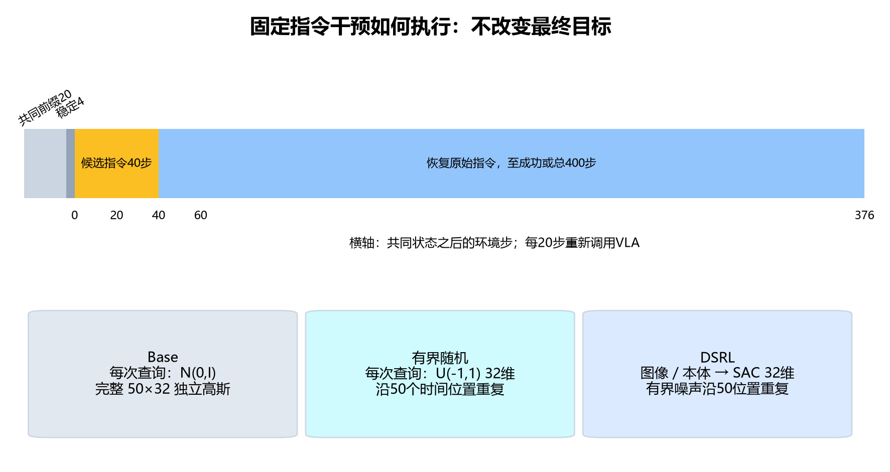
| 噪声模式 | 实际采样 | 用途 |
|---|---|---|
| Base | 50×32独立标准高斯 | 冻结π₀默认先验 |
| bounded_random | 32维U(−1,1)，重复50次 | 匹配DSRL维度/范围的随机对照 |
| DSRL | 冻结PixelSAC按当前图像/本体采样32维有界向量，重复50次 | 评估已学习的噪声策略；本批不再更新 |
历史完整组合的RNG为 73000 + reset_seed + 100000 × rollout_seed，再按query index fold_in。同一噪声模式的文本分支共享随机键；不同分布的噪声数组并不相同。
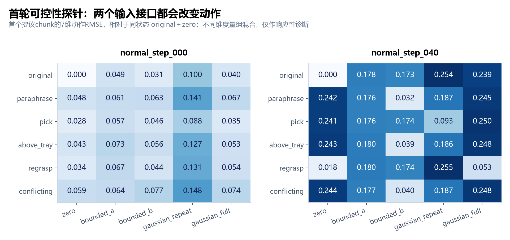
5. C1：开发集提示收益在独立确认中减弱
5.1 状态构造与开发结果
开发reset10–19先用原文＋零噪声执行20步，确认尚未抓取或完成；构造C0无位移、C1世界坐标X＋3cm、C1 X−3cm，均重置目标速度并稳定4步。共同状态经新环境＋相同动作前缀重放，核对物理、本体和两路图像。各状态4文本×3噪声，共360主分支，另有2次重复验证。
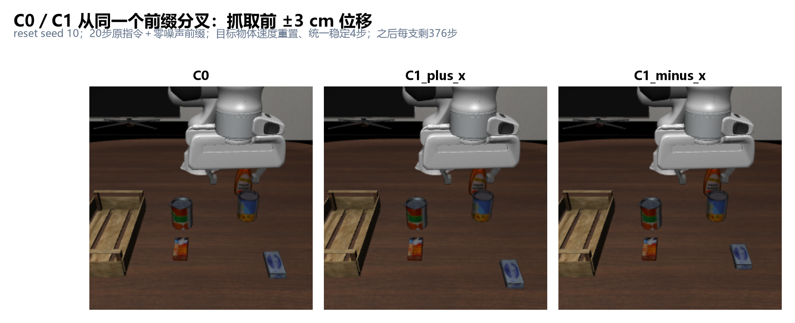
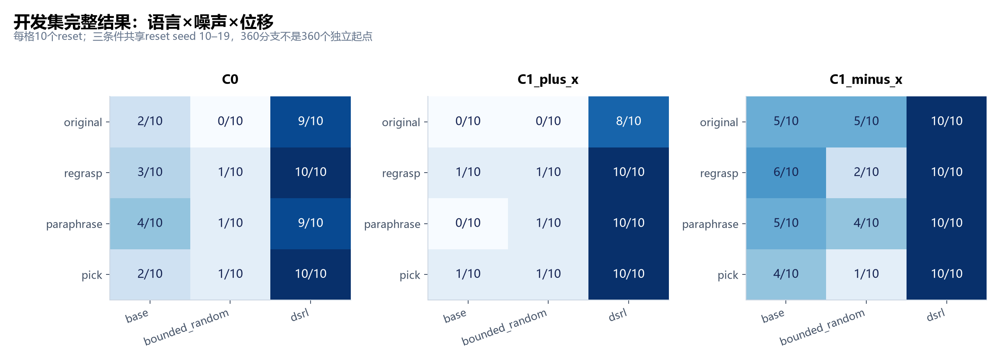
开发集上“改写＋DSRL”达到30/30，并不证明超加性交互。以original/regrasp × Base/DSRL的四单元计算，成功率交互为 (30−27−10+7)/30＝0。而且固定pick/regrasp已接近上限，尚未证明需要学习状态相关的指令selector。
5.2 新reset与三份控制器的独立确认
锁定original/regrasp后，使用reset100–109和相同三种状态；Base、有界随机、DSRL s0/s1/s2，共300分支。旧父job18196在后续recovery阶段退出1，前面seed0/1/2确认阶段已经完整保存。这里保留有效的300条确认数据，不把父job状态当作这些数据无效的理由，也不把后续失败掩去。
| 策略 | original | regrasp | 改写救回 / 损失 | 净变化 | 探索性95% cluster区间 |
|---|---|---|---|---|---|
| Base | 12/30 | 18/30 | 7 / 1 | +20.0 pp | [+3.3, +36.7] pp |
| 有界随机 | 14/30 | 15/30 | 3 / 2 | +3.3 pp | [-16.7, +20.0] pp |
| DSRL s0 | 28/30 | 29/30 | 1 / 0 | +3.3 pp | [+0.0, +10.0] pp |
| DSRL s1 | 26/30 | 28/30 | 2 / 0 | +6.7 pp | [+0.0, +16.7] pp |
| DSRL s2 | 27/30 | 27/30 | 1 / 1 | +0.0 pp | [-10.0, +10.0] pp |
“救回/损失”按相同reset、状态的original/regrasp成对计数。上表95%区间由本报告重新进行10,000次reset-cluster bootstrap（固定seed20261028）得到；每次保留同reset的三个条件。它是探索性区间，没有多重比较校正，不是预注册显著性判决。
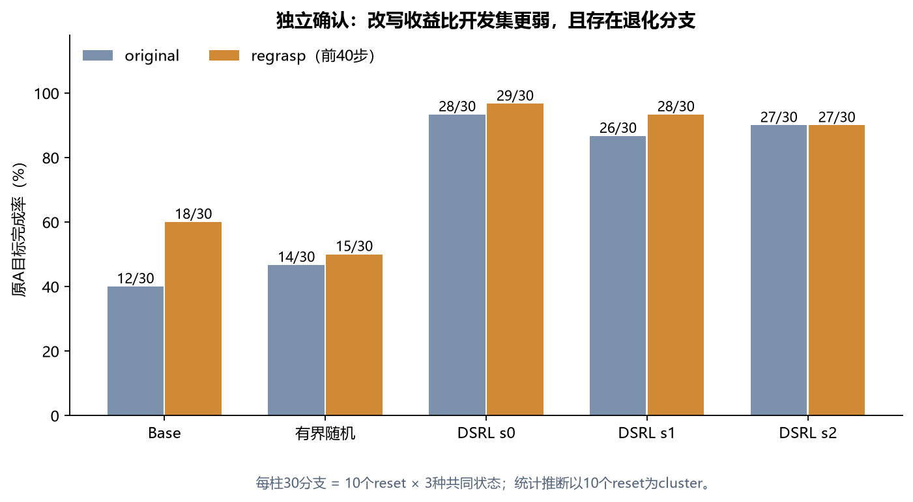
6. C2 v6：能恢复，但当前试点太小且偏容易
参考策略先把奶油奶酪抬起：最多160步内连续3步保持抓取、抬高≥4cm、水平移动≥1cm。固定世界坐标末端目标闭爪稳定后，分成匹配等待20步的两支：C0继续闭爪，C2物理开爪让物体掉回桌面。验证分离、桌面支撑、无异常穿透、下落≥2cm、水平位移≤8cm及可达性筛查，然后在原400步预算内续跑。
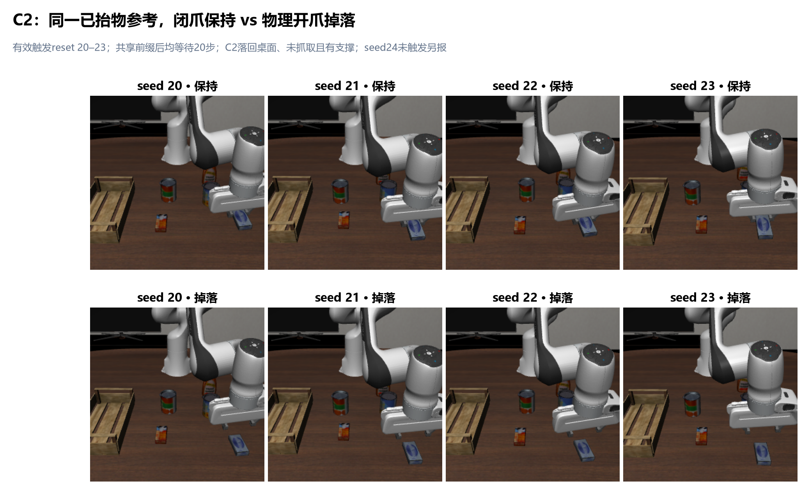
请求reset20–24，只有20–23触发；24在160步内最多抬高4.10mm，仅1步检测到抓取，属于参考未触发。触发率4/5，条件恢复分母4，不能合成“端到端恢复成功率”。有效4参考×2条件×4文本×3噪声＝96主分支，另有2重复。
| 掉落后前40步指令 | Base | 有界随机 | DSRL seed0 |
|---|---|---|---|
| original | 4/4 | 3/4 | 4/4 |
| regrasp | 4/4 | 4/4 | 4/4 |
| paraphrase | 4/4 | 4/4 | 4/4 |
| pick | 4/4 | 4/4 | 4/4 |
表中只含C2掉落，不混入更容易的C0。C0各组合均4/4。C2唯一失败是reset23、original、有界随机：虽然重抓并抬起，剩余289步内没完成入托盘。Base原文已经4/4，DSRL原文同样4/4；原文平均续跑步数123.5与96.0，仅可作四参考上的描述。
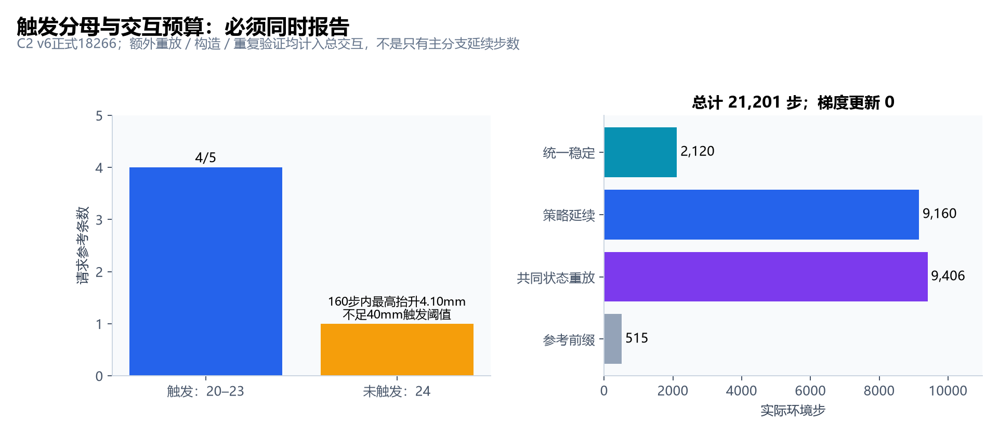
7. E1双目标确认：执行能力与目标偏置同时存在
7.1 为什么要重做目标诊断
早期所有文本都围绕同一个A目标，不能检验噪声控制器能否随语言选择对象。新first_batch保持原物理场景，A文本为 pick up the cream cheese and put it in the tray，B文本为 pick up the butter and put it in the tray。相同观测、相同噪声策略，全文持续400步，不在完成原A目标时提前终止。
开发reset3000–3009用于诊断，辅助文本各5次；确认reset3100–3139 × 两个采样seed × 两目标 × 五策略＝800。锁定先于确认；全部40个reset cluster完整、0技术错误/重试。首个稳定抓取定义为连续3个底层控制步满足，固定类别后不回写；没有抓取记NONE，而非删除。
7.2 逐目标结果
| 策略 | A正确首抓 | B正确首抓 | A ever | B ever | B指令误抓A | B选择性首次完成 |
|---|---|---|---|---|---|---|
| Base | 35/80 | 4/80 | 33/80 | 10/80 | 38/80 | 7/80 |
| 有界随机 | 25/80 | 7/80 | 18/80 | 9/80 | 31/80 | 4/80 |
| DSRL s0 | 80/80 | 0/80 | 80/80 | 21/80 | 77/80 | 1/80 |
| DSRL s1 | 80/80 | 0/80 | 80/80 | 27/80 | 74/80 | 2/80 |
| DSRL s2 | 80/80 | 0/80 | 79/80 | 8/80 | 62/80 | 4/80 |
ever表示400步内曾满足请求的官方目标；选择性首次完成要求请求目标严格先于错误目标完成，同时完成也不算。三份DSRL在B下合计56/240曾完成，但只有7/240先完成B；不能把56/240解释为稳定的B指令跟随。
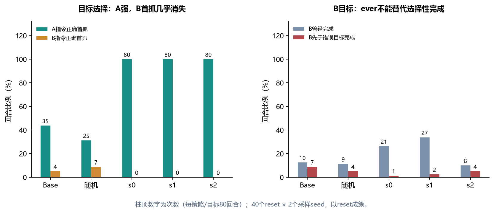
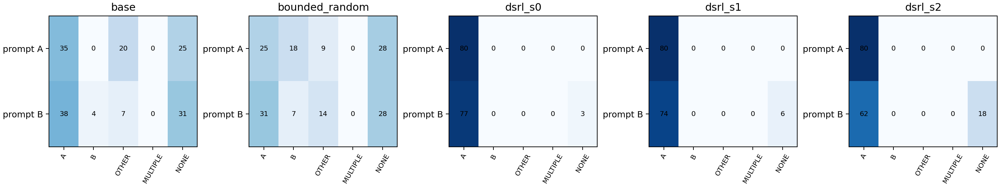
7.3 配对统计与解释
对这三份固定控制器取平均，两目标合并的正确首抓相对Base为＋25.63个百分点，95% reset-cluster区间[19.38,31.88]；官方ever为＋34.58个百分点，[27.50,41.67]。相对有界随机，正确首抓＋30.00个百分点，[23.13,36.25]，ever＋44.58，[37.50,51.25]。这些正收益主要由A贡献，不是双目标通用性的证据。
语言干预效应 L＝½[P(A首抓|A文)−P(A首抓|B文)＋P(B首抓|B文)−P(B首抓|A文)]，Base为0.00625，有界随机−0.10625，三个DSRL为0.01875/0.03750/0.11250。同一reset/采样下双目标均正确首抓的比例，Base0/80、有界随机2/80、三个DSRL均0/80，未达到注册的语言接口可用门槛。
B指令下额外误抓A相对Base为＋48.75、＋45.00、＋30.00个百分点，三个95% cluster区间均在0以上；相对有界随机也均为正。满足预设GOAL_BIAS_CANDIDATE投入判断。它说明有理由研究训练目标偏置，不是“VLA完全不理解语言”或已定位内部因果机制。
一旦正确先抓A，Base为33/35完成A，三个DSRL合计239/240完成A。A的执行链路很强。B没有足够正确首抓样本，因此不能据此断言B只差语义、精度已足够。
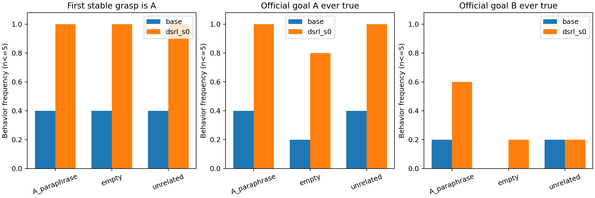
统计采用10,000次reset-cluster bootstrap，采样seed和同reset全部方法一起重抽。三个固定controller不是240个独立模型；零事件产生的退化bootstrap区间不意味着总体概率精确为零。
8. E2组合任务：第一阶段阻塞，尚未隔离阶段衔接
使用两个LIBERO-90任务，Base冻结VLA、600步上限；global、fixed_stage、oracle_stage各10个reset4000–4009。真值oracle只用于评测上限诊断，不作为普通学习控制器的观测。完整官方goal优先终止。
| 任务 | global文本 | 阶段0文本 | 阶段1文本 |
|---|---|---|---|
| T1 / id8 打开上抽屉并放碗 | Goal: open the top drawer of the cabinet and put the bowl in it. | Goal: open the top drawer of the cabinet and put the bowl in it. Next: Open the top drawer. | Goal: open the top drawer of the cabinet and put the bowl in it. Next: Place the bowl inside it. |
| T2 / id4 前方黄油入上抽屉后关闭 | Goal: put the butter at the front in the top drawer of the cabinet and close it. | Goal: put the butter at the front in the top drawer of the cabinet and close it. Next: Place the front butter inside it. | Goal: put the butter at the front in the top drawer of the cabinet and close it. Next: Close the top drawer. |
fixed_stage：从global开发回合第一阶段完成时间中位数校准，向上取20步并截断到[100,300]；本次没有有效完成事件，严格使用预设fallback：T1第200步、T2第300步切换。oracle_stage：每底层步累积阶段谓词，连续3步达标，在20步query边界切换；失效时允许回退。没有搜索切换时间直到出现正结果。
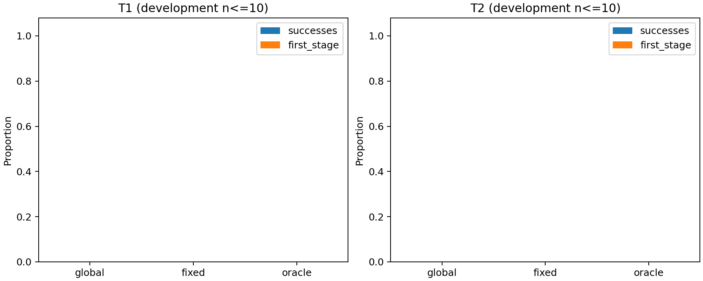
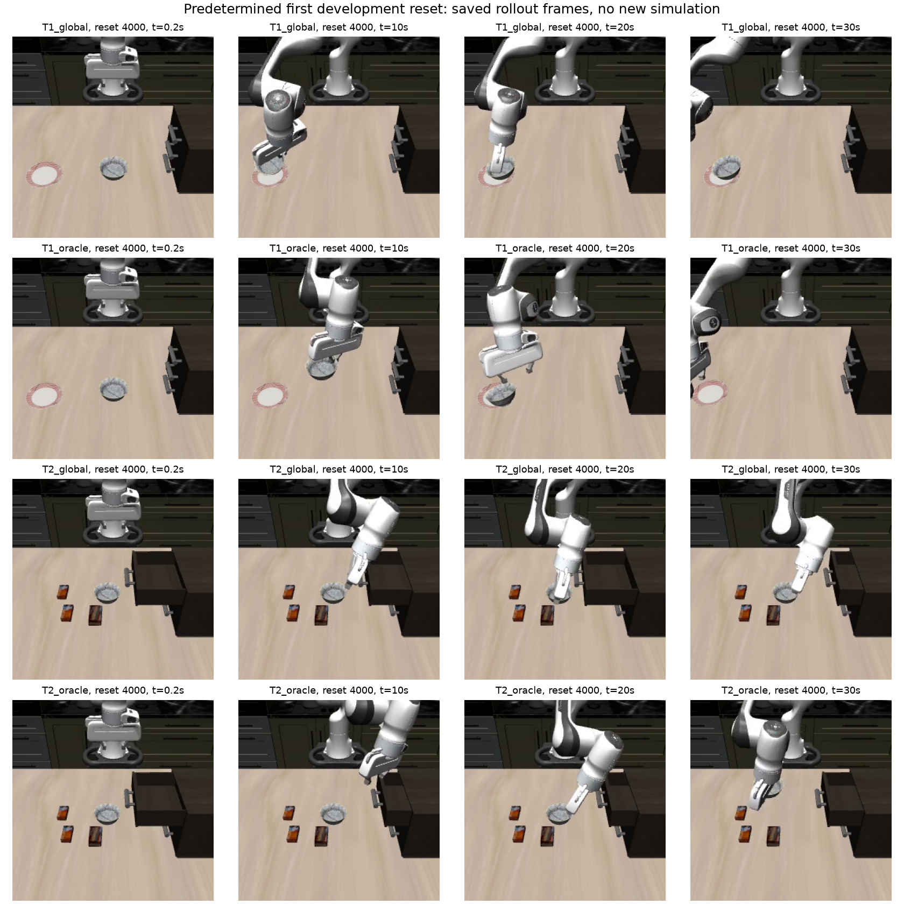
工程witness已在合法抽屉范围内核验Open/Close/In及完整goal，未额外调用策略或环境step。因此至少排除了简单的成功谓词实现错误；prompt格式、raw reset分布、基本技能仍可能共同影响。
9. 迁移诊断：拒绝等价声明，限定新实验范围
为开展参数微调，转换现有同一π₀_libero到锁定RLinf native实现。检查包括图像方向/resize、本体和动作变换、horizon50/chunk20/denoise10、token48、显式z、初态和终止语义。原OpenPI加载器bf16舍入、Flax GELU逐步dtype和embedding缩放差异已作来源明确的兼容处理；RLinf/原模型源码和原权重没有被改写。
但120组静态输入仍有23/120超过工程报警线（RMSE>0.01或最大绝对差>0.1），平均RMSE 0.01117301，最大RMSE 0.08821263，最大绝对差 2.043797。20个完整开发回合使用逐项一致的初始XML、物理、本体、双图像以及旧Base实际保存的z，0技术错误、8,000物理步；首抓类别一致率60%，双目标ever向量一致率70%，均低于预设90%。
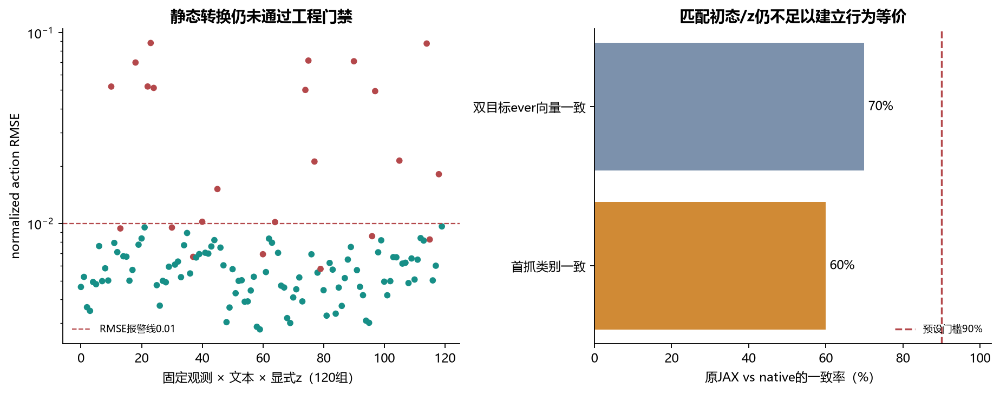
| 目标指令 | 回合 | 首抓A | 首抓B | 首抓OTHER | 无首抓 | 请求目标ever |
|---|---|---|---|---|---|---|
| A | 10 | 2 | 0 | 2 | 6 | 2 |
| B | 10 | 4 | 1 | 3 | 2 | 2 |
表为迁移用开发集，每目标10回合，不能当成新SFT终评。native B正确首抓1/10，误抓A4/10，B ever2/10；目标接口问题在native内部仍存在。
另一个诊断显示，原JAX自身在4090/3090上相同数组也有33/120报警，最大绝对差2.040344，说明生成过程存在硬件数值敏感性。这不证明native等价，也不撤销原门禁失败。依据实验规约11.1的回退条款，下一批只开展同一native runtime未适配/适配的配对比较，不将结果与原JAX DSRL作“只改了LoRA”的单变量比较。
job18655因严格对齐门禁返回FAILED，完整20回合仍可作为迁移诊断证据。原始失败报告保留，没有生成虚假的SFT_ALIGNMENT_PASS；审核只批准限定范围的SFT-A前置与试点。
10. SFT-A：在真实双目标监督上先检验可修复性
正在运行job18658，3090node2、单RTX3090、8 CPU。代码锁定 1ede832071e9de25cc92566b241f80916717d675，独立环境 dsrl_sft_native_20261028；原JAX基线环境保持原样。下述是当前已执行的条件后续批次，不代表10月27日first_batch曾进行训练。
10.1 数据与监督时间必须正确
官方LIBERO数据源revision f13aa24a3da8c43c7225569f28c562979fa0e35a，A/B各50条真实演示；每目标按完整轨迹40 train/10 validation，split seed99023，训练seed17。不是把A轨迹改标签成B。全部100条官方终态成功；独立逐状态顺序审计显示两目标各50条均首先稳定抓取真实请求对象。
原数据生成器在执行action[j]后记录obs[j]，但states[j]是执行前状态，因此训练监督采用 obs[j] → actions[j+1:j+51]。不跨轨迹、不在末尾补假的时间动作；额外DeltaActions作用于前6维，保留原归一化、32维动作接口和真实7维诊断。两路原始相机均旋转180°，使用作者实际client resize。
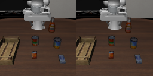
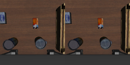
10.2 实际训练与通过的前置
| 项目 | 锁定设置/实际证据 |
|---|---|
| 适配 | LoRA rank8 / alpha8 / dropout0；all_linear按实际native模块类型覆盖，不假称所有计算路径都被训练 |
| 参数 | 6,043,136个LoRA参数，462张量；未适配基座hash保持一致 |
| 梯度覆盖 | profile发现56张量无梯度，部分源于native MHA functional路径；保留完整coverage，不以“all_linear”名义掩盖。自定义Gemma MLP不是普通nn.Linear，未被该规则适配 |
| 优化 | global batch8 / micro1；目标均衡；LR1e-4，warmup100，cosine，Adam β(0.9,0.95)，eps1e-8，weight decay1e-10，clip1，bf16 |
| 验证 | 每条held-out轨迹8个固定真实窗口；固定noise/time seed99024；按目标、轨迹等权的32维flow loss选checkpoint，真实7维另报 |
| 前置job18657 | 真实2次更新，第二次LoRA最大delta约1.00036e-6；新进程恢复后同输入输出max error＝0；基座未变。这2次计入总预算 |
| 预算 | 先到500更新；只有held-out均值和B真实7维loss均低于初始且有限，才继续到共享上限3000；每500保存 |
| 配置SHA256 | 71bc984bddee727bbd83d4e2b46eeb2462485cb595b6b7fe92511fe742b8c9b1 |
profile覆盖、真实参数delta、新进程恢复、演示首抓顺序、原JAX跨GPU数值记录与工作流状态已只读复制到本地，纳入source_manifest。迁移审核锁定的8份本地运行证据SHA逐项匹配。没有复制模型权重或训练checkpoint张量。
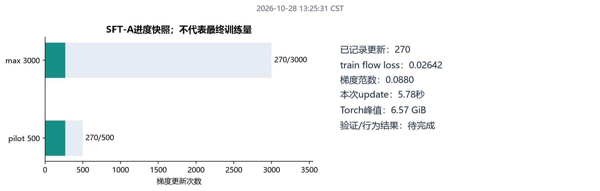
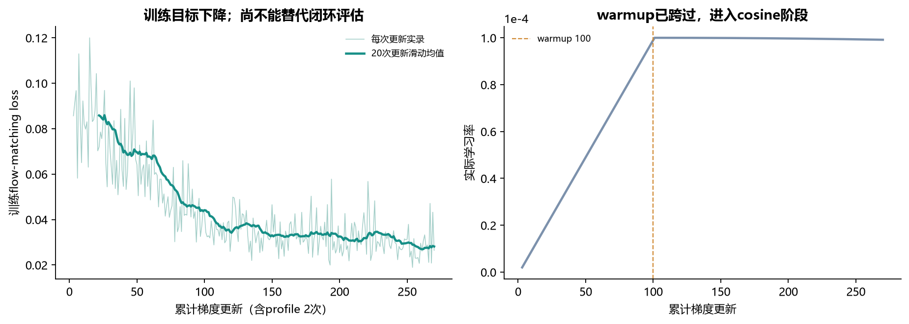
按约5.9秒/update估计，500更新pilot总计算约49分钟，3000更新约4.9小时，验证/保存和排队另计。最终训练量取决于500门禁。报告期间SSH曾短暂超时，随后恢复；恢复后只读状态确认训练仍RUNNING，自动交接器WAIT_TRAIN，没有因编写报告取消、重启或更改任务。
10.3 已安排的自动交接
交接器代码 998be8b9d55376a66d7b548a65dcf720316f518f，此前核验PID2759450、PPID1、独立session；工作流位于 research/sft-a-v1-20261028/workflows/train-18658/。这不是已提交的第二个GPU作业：有效提交配额限制使终评需在训练结束后自动提交。交接器不占GPU，不依赖本次聊天或SSH连接；遇到训练/评估失败会留记录并停止待审，不盲目重开。
终评只用一次选定checkpoint，native_unadapted / adapted × A/B × 新reset3300–3319，共80回合、最多32,000物理步；同初态/显式噪声配对。预定3300/3301录像，不按结果挑视频；旧确认集和保留集不参与选checkpoint。
powershell -ExecutionPolicy Bypass -File tools/remote.ps1 status 18658
powershell -ExecutionPolicy Bypass -File tools/remote.ps1 logs 1865811. 目前足以支持什么，不足以支持什么
| 论点 | 证据判断 | 理由与缺口 |
|---|---|---|
| DSRL能优化本单任务π₀执行 | 支持，范围明确 | 3个训练seed、各100独立终评均98–100%；仍非跨任务复现 |
| 文本和噪声都能影响动作 | 支持接口响应 | 同状态探针与完整分支有变化；不等于两者作用可分解 |
| 重抓指令与Noise RL有稳定超加性互补 | 尚不支持 | 开发四单元交互为0，确认增益小且有退化；无学习selector对照 |
| 已学会通用双目标语言跟随 | 不支持 | E1 B首抓0/240，双目标均正确0；Base B也弱，机制仍混杂 |
| A单任务奖励形成额外A目标偏好 | 有较强现象证据 | 三controller相对Base/有界随机均额外误抓A；因果机制需对称B训练或均衡训练控制 |
| 阶段信息现在即可改善长任务 | 当前没有支持 | 第一阶段为0，oracle未隔离衔接；不是对适配后方法的否定 |
| 已证明困难扰动恢复/OOD提升 | 不支持 | C2仅4触发参考，Base已4/4；同场景受扰不自动构成严格OOD |
| 新native与旧JAX等价 | 门禁未通过 | 静态23/120报警，闭环60%/70%；新结果只能native内部比较 |
| SFT改善B且保留A | 待验证 | 训练进行中；真实演示与参数更新已核验，行为终评未完成 |
因此，目前适合的FYP阶段性表述是：复现单任务潜噪声适配，并通过同状态、双目标和组合任务诊断发现其适用边界，提出目标条件化与技能补齐的后续检验。还不适合表述为已实现多任务通用恢复、已验证语言/噪声固定分工、完整SARL复现或首次提出某类方法。
12. 基于证据的下一步实验与研究方案
优先级是先回答一个能改变下一步投入的问题：在共同native底座上，真实A/B监督能否把B的目标选择拉起来，同时保住A？完成当前SFT与自动配对评估后再选一个研究分支，避免同时改底座、噪声、语言selector、阶段与奖励而失去可解释性。
12.1 当前批次完成后的分析清单
- 先核验有效性：训练最终更新量、500门禁、被选checkpoint及其val loss、冻结hash、LoRA实际delta、终评两臂同初态/z、80条完整轨迹及有无技术缺失。不以loss下降替代行为结论。
- 按目标拆开：正确首抓、首抓混淆、L、pair_both_correct、ever/final/稳定释放/选择性首次完成、A保留、B误抓A及步数。对20个reset成簇计算配对差和区间，报告绝对次数。
- 看正确选择后的执行：若B首抓上升但完成仍低，才有足够样本讨论B执行链路；若B ever只是在先完成A之后上升，则目标接口仍未解决。
- 视频与频率对照：先展示预定3300/3301，再从完整错误分类中抽取典型例，明确标记事后案例，不凭“看起来更好”选checkpoint。
| SFT结果模式 | 合理解释 | 下一步动作（条件计划） |
|---|---|---|
| B正确首抓/选择性完成提高，A保留 | 小规模目标接口具有监督可修复性；不是已经证明多任务通用 | 独立确认后可作为共同warm start，选“目标条件潜策略”或技能已具备的阶段对照之一 |
| 验证loss下降，B首抓基本不变 | 离线预测改进未转成闭环目标选择；或数据/执行误差仍主导 | 诊断输入、动作时序、LoRA有效覆盖和闭环分布；不盲目扩大PPO预算 |
| B首抓提高，但入托盘不提高 | 选择问题部分缓解，执行/释放/目的地成为瓶颈 | 针对正确选中B后的失败做技能/动作链分析，再决定action expert适配 |
| B提升但A明显退化 | 出现适配权衡，尚不构成双目标共同改进 | 重新锁定A保留约束；考虑相同预算下action-expert-only与当前LoRA对照，不择优隐去退化 |
| 500更新未通过loss门禁 | 当前监督/覆盖/优化方案未提供预定信号 | 保留500和初始结果，完成诊断；不自动追加到3000或开展多seed formal |
12.2 优先研究候选：目标条件化的潜噪声策略
研究问题：潜噪声RL的单目标奖励是否塑造了强动作先验？在相同冻结VLA、相同A/B训练任务与预算下，给潜策略加入目标条件，能否改善多目标选择与执行，并减少负迁移？当前E1使这个问题比复杂阶段恢复更直接，但它仍是建议，不是已实现或已排队实验。
| 拟议对照 | 保持相同 | 隔离的问题 |
|---|---|---|
| 冻结VLA＋默认高斯 | 共同checkpoint、观测、动作变换、reset分布与评估 | 底座起点 |
| 重复有界随机 | 32维范围与时间重复方式 | 参数化改变本身的贡献 |
| 目标盲SAC，A/B均衡训练 | 同A/B任务调度、请求目标奖励、真实环境总预算 | 公平多任务潜策略基线 |
| 目标条件SAC，A/B均衡训练 | 除目标编码外同上，网络/计算增加明确报告 | 潜策略的目标条件是否带来增益 |
关键控制是目标盲与目标条件两组都在A/B均衡奖励下训练；不能将新A/B条件策略只与旧A-only控制器比较，把训练目标变多的收益全部归因于语言条件。仅用A/B one-hot时结论是已知双任务条件化，不能称语言泛化；若使用文本embedding，必须另外锁定未见表述，并区分语义编码和任务ID。正式阶段再考虑3个训练seed，先完成真实更新/恢复/短预算pilot。
一个更小的可选机制诊断是：在原JAX底座上按相同旧训练协议训练B-only控制器，分别在A/B上测试，和A-only形成对称矩阵。若都倾向各自奖励对象，能更直接支持奖励特异性先验；若B-only也学不起来，则底座动作支持/技能问题更突出。该诊断需要另立预算和种子锁定，本文没有提交。
12.3 阶段、恢复与OOD如何按条件推进
阶段路线：只有在T1/T2基本技能已出现可解释信号后，再按原规约比较G完整goal与GS相同goal＋oracle stage，共同底座、相同action expert训练范围、相同真实交互总预算。先做两组pilot，不同时引入新的Noise SAC。oracle是评估/训练上限条件；实际部署阶段估计器必须另测，不能让控制器暗用真值。
恢复路线：先在独立开发状态上找到Base既非全成功、也非全不可达的扰动强度，锁定触发率、掉落位置/速度、剩余预算和安全构造判据；分别报告未触发、触发后可恢复性与条件成功。正式确认用新reset和强度，不用旧C2四参考反复调到正结果。共同前缀、构造、重放和训练各阶段都计入交互预算。
OOD路线：依次区分未见语言表述、未见初始布局、未见扰动强度、未见物体/任务，分别锁定训练支持和留出分布。同场景A/B和同义改写不足以证明跨任务通用。先得到已知任务的可靠多目标接口，再投入更广泛OOD评估，减少因底座零能力导致无法解释的全失败。
13. 复现索引、来源与本报告核验
13.1 关键运行与版本
| 运行/用途 | job / commit | 结果与查阅位置 |
|---|---|---|
| 旧基线 | 18045；18046→18102；18103→18122；18123→18125c227be8c48353115b7c5de0b3e99fb17d388462f | 远端各runs/job-ID/；本地历史报告raw缓存 |
| 接口、C1开发 | 18160 / 18166 | 360分支CSV；短探针来源登记在source_manifest |
| C1确认 | 18196 seed0/1/22f2b2171b35ce995682775d36df1330989c0fa05 | 300分支CSV；父job后续recovery失败，确认阶段完整 |
| C2 v6 | 182660f8f6e4b4efd（短hash） | 96分支CSV；未触发记录保留于原结果 |
| first_batch | 18582/18583 E0；18584主评估008a0a2f9789b14e2cc732a15e23ad9432a1aa79 | 逐条件汇总、原配对统计、锁定协议 |
| 迁移诊断与范围审核 | 18655；审核配置 | 保留未通过门禁的内部实验限定 |
| SFT-A | 18657 profile；18658 train1ede832071e9de25cc92566b241f80916717d675 | 训练配置、实际run、截止时快照、真实更新/新进程恢复 |
| 后台终评交接 | 998be8b9d55376a66d7b548a65dcf720316f518f | workflow train-18658；不改变训练1ede源码目录 |
锁定子模块：LIBERO 87edbd1b823e464bc66557d213cc45e9f88aa543，OpenPI a6d2400d2534ce32e7bdf8747709b97aaef8ec04。RLinf新批次 fab7f407fbc611085eb163962e3c89c0ab424c1a。
原环境Python3.11.11、JAX0.5.0、TensorFlow2.19.0、protobuf5.29.6、MuJoCo3.3.1；新native环境Torch2.11.0+cu130、Torchvision0.26.0+cu130、PEFT0.17.1、JAX0.5.3、numpy1.26.4、Arrow20、datasets2.14.4。新旧环境不是同一依赖集合。native完整freeze SHA为 f2374e55360d3823e2e2451faf80f7b44515325603e7cfbd911041304c4a1115。
13.2 预算、失败与有效性记录
first_batch主job18584在3090node2完成，Slurm 6:30:12；含两个E0累计6.7353已分配GPU小时、420,164真实物理步＝408,800策略＋11,360重放＋4构造，0新梯度更新。990/990轨迹与冻结权重闭环核验通过，0技术错误/重试；GPU采样峰值9,079MiB、RSS峰值23,273.9MiB。原生done后继续记录的119,417步是E1固定horizon的有意设计，不是偷偷重复计分。
工程故障按类型保留：早期C2的OSC固定末端与稳定定义问题、node2分配GPU初始化故障、新SFT数据obs/state时序、NNX value叶包装、标量mask维度、XML资产绝对路径、跨NumPy pickle以及PEFT配置接口。修复后要重新验证对应流程；旧协议状态不与新版本混池。这里的FAILED既可能是工程错误，也可能是对齐门禁按设计拒绝，不能直接解释为算法无效。
13.3 本地文件与复核方法
本报告主文件为 docs/reports/20261028/report.html；图表、视频在相邻figures/与media/，可离线打开并播放。复制整个文件夹可保留相对链接；打印PDF会隐藏播放器并保留视频文件名/说明。视频、逐分支数据和QA目录已排除Git，模型/数据集未复制到报告。
source_manifest.json记录每个实际读取来源的相对路径、字节数和SHA256，以及数值/引用核验项；derived_results.json保留本报告重算的配对次数与区间。报告生成器只读本地缓存，没有SSH、仿真器、GPU调用或训练环境导入。历史视频沿用已完成的动作精确重放核验，不重新生成轨迹。
本地完整历史材料仍在 tmp/experiment-report-20261021/ 和 tmp/language-stage-20261027/job-18584/。first_batch最终归档SHA256：d1a64cbef1c4683f93c4ee7eb14a911d3942ed699c75a9640c6eb882284b74f5。本报告是跨批次整理，没有覆盖原报告、原统计、失败记录或锁定协议。